Model API
Last updated: 2021-12-15
Checks: 6 1
Knit directory: report/
This reproducible R Markdown analysis was created with workflowr (version 1.6.2). The Checks tab describes the reproducibility checks that were applied when the results were created. The Past versions tab lists the development history.
Great! Since the R Markdown file has been committed to the Git repository, you know the exact version of the code that produced these results.
Great job! The global environment was empty. Objects defined in the global environment can affect the analysis in your R Markdown file in unknown ways. For reproduciblity it’s best to always run the code in an empty environment.
The command set.seed(20211125) was run prior to running the code in the R Markdown file. Setting a seed ensures that any results that rely on randomness, e.g. subsampling or permutations, are reproducible.
Great job! Recording the operating system, R version, and package versions is critical for reproducibility.
Nice! There were no cached chunks for this analysis, so you can be confident that you successfully produced the results during this run.
Using absolute paths to the files within your workflowr project makes it difficult for you and others to run your code on a different machine. Change the absolute path(s) below to the suggested relative path(s) to make your code more reproducible.
| absolute | relative |
|---|---|
| ~/Saez/report | . |
Great! You are using Git for version control. Tracking code development and connecting the code version to the results is critical for reproducibility.
The results in this page were generated with repository version eb7b59d. See the Past versions tab to see a history of the changes made to the R Markdown and HTML files.
Note that you need to be careful to ensure that all relevant files for the analysis have been committed to Git prior to generating the results (you can use wflow_publish or wflow_git_commit). workflowr only checks the R Markdown file, but you know if there are other scripts or data files that it depends on. Below is the status of the Git repository when the results were generated:
Ignored files:
Ignored: data/2021-12-06-15-42_all_results.RDS
Ignored: data/2021-12-08-14-10_all_results.RDS
Ignored: data/2021-12-09-09-21_all_results.RDS
Ignored: data/2021-12-09-17-26_all_results.RDS
Ignored: data/2021-12-13-18-43_all_results.RDS
Ignored: data/2021-12-14-10-57_all_views.RDS
Ignored: data/2021-12-14-17-59_all_views.RDS
Ignored: data/2021-12-14-23-01_all_results.RDS
Ignored: results/
Unstaged changes:
Modified: analysis/introduction.Rmd
Note that any generated files, e.g. HTML, png, CSS, etc., are not included in this status report because it is ok for generated content to have uncommitted changes.
These are the previous versions of the repository in which changes were made to the R Markdown (analysis/model_api.Rmd) and HTML (docs/model_api.html) files. If you’ve configured a remote Git repository (see ?wflow_git_remote), click on the hyperlinks in the table below to view the files as they were in that past version.
| File | Version | Author | Date | Message |
|---|---|---|---|---|
| html | f72d59c | schae211 | 2021-12-15 | Build site. |
| html | c428797 | schae211 | 2021-12-15 | Build site. |
| html | 067350b | schae211 | 2021-12-02 | Build site. |
| html | 77e38fe | schae211 | 2021-12-02 | Build site. |
| Rmd | 2135145 | schae211 | 2021-12-02 | wflow_publish(“analysis/model_api.Rmd”) |
| html | b68d23d | schae211 | 2021-12-02 | Build site. |
| html | 105ae8a | schae211 | 2021-12-02 | Build site. |
| Rmd | 77c2b91 | schae211 | 2021-12-02 | wflow_publish(files = “analysis/model_api.Rmd”) |
Setup.
knitr::opts_chunk$set(echo = TRUE, collapse = TRUE)
knitr::opts_knit$set(root.dir = "~/Saez/report")Loaded packages.
suppressPackageStartupMessages(library(mistyR))
suppressPackageStartupMessages(library(future))
suppressPackageStartupMessages(library(tidyverse))
plan("multisession", workers=14)Introduction
Before introducing the current version of MISTy (“as-function”), we thought about hardcoding new view-specific models into the source code, such that users could specify which model they would like to use. Chosing between bagging and CV for performance estimation and then between several pre-specified models.
In this document I want to include how we thought about implementing this.
See the corresponding git branch here.
MISTy models.R
Function to generate bags
generate_bags <- function(input, n.bags, seed) {
seq.input <- seq_len(nrow(input))
raw.bags <- withr::with_seed(
seed,
caret::createResample(seq.input, times = n.bags)
)
purrr::map(raw.bags, function(bag) {
in.bag <- bag
out.bag <- dplyr::setdiff(seq.input, in.bag)
list(x.in = in.bag, x.out = out.bag)
})
}Function to generate folds
generate_folds <- function(input, n.folds, seed) {
assertthat::assert_that(nrow(input) >= n.folds,
msg = "The data has less rows than the requested number of cv folds."
)
seq.input <- seq_len(nrow(input))
raw.folds <- withr::with_seed(
seed,
caret::createFolds(seq.input, k = n.folds)
)
purrr::map(raw.folds, function(fold) {
hold.out <- fold
in.fold <- dplyr::setdiff(seq.input, hold.out)
list(x.in = in.fold, x.out = hold.out)
})
}Wrapper function for the ML models
model_wrapper <- function(input, target, learner, n.bags, subs,
n.vars, vars, seed, ...) {
ellipsis.args <- list(...)
switch(learner,
"ranger" = {
algo.arguments <- list(
formula = stats::as.formula(paste0(target, " ~ .")),
data = input,
num.trees = n.bags,
importance = "impurity",
mtry = n.vars,
verbose = FALSE,
num.threads = 1,
seed = seed)
if (!(length(ellipsis.args) == 0)) {
algo.arguments <- merge_2(algo.arguments, ellipsis.args)
}
model <- do.call(ranger::ranger, algo.arguments)
predictions <- tibble::tibble(index = seq_len(nrow(input)),
prediction = model$predictions)
list(unbiased.predictions = predictions,
models = list(model = model))
}, "lm" = {
algo.arguments <- list(
formula = stats::as.formula(paste0(target, " ~ .")),
data = input[subs$x.in, c(target, vars)]
)
if (!(length(ellipsis.args) == 0)) {
algo.arguments <- merge_2(algo.arguments, ellipsis.args)
}
model <- do.call(stats::lm, algo.arguments)
pred <- predict.lm(model, input[subs$x.out, vars])
list(model = model, prediction = pred)
}, "svmLinear" = {
assertthat::assert_that(requireNamespace("kernlab", quietly = TRUE),
msg = "The package kernlab is required to use linear SVM"
)
algo.arguments <- list(
x = stats::as.formula(paste0(target, " ~ .")),
data = input[subs$x.in, c(target, vars)],
kernel = "vanilladot",
C = 1,
type = "eps-svr",
kpar = list() # no hyperparameters for linear kernel
)
if (!(length(ellipsis.args) == 0)) {
algo.arguments <- merge_2(algo.arguments, ellipsis.args)
}
model <- do.call(kernlab::ksvm, algo.arguments)
pred <- kernlab::predict(model, input[subs$x.out, vars])
list(model = model, prediction = pred)
}, "earth" = {
assertthat::assert_that(requireNamespace("earth", quietly = TRUE),
msg = "The package earth is required to use MARS."
)
algo.arguments <- list(
formula = stats::as.formula(paste0(target, " ~ .")),
data = input[subs$x.in, c(target, vars)]
)
if (!(length(ellipsis.args) == 0)) {
algo.arguments <- merge_2(algo.arguments, ellipsis.args)
}
model <- do.call(earth::earth, algo.arguments)
pred <- predict(model, input[subs$x.out, vars])
list(model = model, prediction = pred)
}
)
}Model with performance estimation based on OOB
build_bagged_model <- function(input, target, learner, n.bags, n.vars,
seed, ...) {
set.seed(seed)
if (learner == "ranger") {
return(
model_wrapper(input = input, target = target, learner = learner,
n.bags = n.bags, subs = NULL, n.vars = n.vars,
vars = NULL, seed = seed, ...)
)
} else {
bags <- generate_bags(input = input, n.bags = n.bags, seed = seed)
n.vars <- ifelse(is.null(n.vars), ncol(input)-1, n.vars)
predictors <- colnames(input)[colnames(input) != target]
models <- purrr::map(bags, function(bag) {
vars <- sample(predictors, n.vars)
model_wrapper(input = input, target = target, learner = learner,
n.bags = n.bags, subs = bag, n.vars = n.vars,
vars = vars, seed = seed, ...)
})
# Generate the OOB predictions, using the average for each sample
predictions <- purrr::map2_dfr(bags, models, function(bag, model) {
tibble::tibble(index = bag$x.out, prediction = model$prediction)
}) %>%
dplyr::group_by(index) %>%
dplyr::summarise(prediction = mean(prediction)) %>%
dplyr::arrange(index)
assertthat::assert_that(nrow(predictions) == nrow(input),
msg = "There are too few bags to get OOB predictions for all observations.
Consider increasing the number of bags or using CV.")
return(list(unbiased.predictions = predictions,
models = purrr::map(models, ~ .x$model)))
}
}Model with performance estimation based on CV
build_cv_model <- function(input, target, learner, cv.folds, seed, ...) {
set.seed(seed)
cvs <- generate_folds(input = input, n.folds = cv.folds, seed = seed)
vars <- colnames(input)[colnames(input) != target]
models <- purrr::map(cvs, function(cv) {
model_wrapper(input = input, target = target, learner = learner,
n.bags = n.bags, subs = cv, vars = vars, n.vars = NULL,
seed = seed, ... = ...)
})
predictions <- purrr::map2_dfr(cvs, models, function(fold, model) {
tibble::tibble(index = fold$x.out, prediction = model$prediction)
}) %>% dplyr::arrange(index)
w.model <- model_wrapper(input, target, learner = learner, n.bags = n.bags,
n.vars = n.vars, seed = seed,
subs = list(x.in = seq_len(nrow(input)),
x.out = seq_len(nrow(input))),
vars = vars, ... = ...)$model
list(unbiased.predictions = predictions,
models = list(model = w.model))
}Helper function to merge two lists
merge_2 <- function(l1, l2) {
n1 <- names(l1)
n2 <- names(l2)
diff <- n1[!(n1 %in% n2)]
n1_list <- diff %>%
purrr::set_names() %>%
purrr::map(function(name) l1[[name]])
union <- n2[!(n2 %in% diff)]
n2_list <- union %>%
purrr::set_names() %>%
purrr::map(function(name) l2[[name]])
return(c(n1_list, n2_list))
}Function to extract importances
imp_model <- function(models, learner) {
switch(learner,
"ranger" = {
models[[1]]$variable.importance
},
"lm" = {
if (length(models) == 1) {
coefs <- models[[1]]$coefficients
coefs[names(coefs) != "(Intercept)"]
} else {
coefs <- purrr::map_dfr(models, function(model) {
model$coefficients }) %>%
colMeans(na.rm = TRUE)
coefs[names(coefs) != "(Intercept)"]
}
},
"svmLinear" = {
if (length(models) == 1) {
(t(models[[1]]@coef) %*% models[[1]]@xmatrix)[1,]
} else {
purrr::map_dfr(models, function(model) {
# scaling or no scaling?
# t(m@coef) %*% as.matrix(expr[bag$in.bag, -1][m@SVindex,])
coefs <- t(model@coef) %*% model@xmatrix
names(coefs) <- colnames(coefs)
coefs
} ) %>% colMeans(na.rm = TRUE)
}
},
"earth" = {
if (length(models) == 1) {
coefs <- earth::evimp(models[[1]], trim = FALSE, sqrt. = TRUE)[, 6]
names(coefs) <- stringr::str_remove(names(coefs), "-unused")
coefs
} else {
purrr::map_dfr(models, function(model) {
coefs <- earth::evimp(model, trim = FALSE, sqrt. = TRUE)[, 6]
names(coefs) <- stringr::str_remove(names(coefs), "-unused")
coefs
}) %>% colMeans(na.rm = TRUE)
}
}
)
}Building View-Specific Model
build_model <- function(views, target, method, learner, n.vars, n.learners,
cv.folds, bypass.intra, seed, cached, ...) {
cache.location <- R.utils::getAbsolutePath(paste0(
".misty.temp", .Platform$file.sep,
views[["misty.uniqueid"]]
))
if (cached && !dir.exists(cache.location)) {
dir.create(cache.location, recursive = TRUE, showWarnings = TRUE)
}
expr <- views[["intraview"]][["data"]]
target.vector <- expr %>% dplyr::pull(target)
ellipsis.args <- list(...)
ellipsis.args.text <- paste(names(ellipsis.args), ellipsis.args,
sep = ".", collapse = "."
)
# returns a list of models
model.views <- views %>%
rlist::list.remove(c("misty.uniqueid")) %>%
purrr::map(function(view) {
model.view.cache.file <-
paste0(
cache.location, .Platform$file.sep,
"model.", method, ".", learner, ".", view[["abbrev"]], ".", target,
".par", n.learners, ".", cv.folds, ".", n.vars, ".",
ellipsis.args.text, ".rds"
)
if (file.exists(model.view.cache.file) & cached) {
model.view <- readr::read_rds(model.view.cache.file)
} else {
if ((view[["abbrev"]] == "intra") & bypass.intra) {
transformed.view.data <-
tibble::tibble(!!target := target.vector, ".novar" := 0)
} else {
transformed.view.data <- view[["data"]] %>%
dplyr::mutate(!!target := target.vector)
}
if (method == "bag") {
model.view <- build_bagged_model(
input = transformed.view.data, target = target, learner = learner,
n.bags = n.learners, n.vars = n.vars, seed = seed, ... = ...
)
} else if (method == "cv") {
model.view <- build_cv_model(
input = transformed.view.data, target = target, learner = learner,
cv.folds = cv.folds, seed = seed, ... = ...
)
}
if (cached) {
readr::write_rds(model.view, model.view.cache.file)
}
}
return(model.view)
})
# make oob predictions
oob.predictions <- model.views %>%
purrr::map_dfc(~ .x$unbiased.predictions$prediction) %>%
dplyr::mutate(!!target := target.vector)
# train lm on above, if bypass.intra set intercept to 0
formula <- stats::as.formula(
ifelse(bypass.intra, paste0(target, " ~ 0 + ."), paste0(target, " ~ ."))
)
combined.views <- stats::lm(
formula,
oob.predictions
)
# cv performance estimate
test.folds <- withr::with_seed(
seed,
caret::createFolds(target.vector, k = cv.folds)
)
intra.view.only <-
model.views[["intraview"]]$unbiased.predictions$prediction %>%
tibble::enframe(name = NULL) %>%
dplyr::mutate(!!target := target.vector)
performance.estimate <- test.folds %>% purrr::map_dfr(function(test.fold) {
meta.intra <- stats::lm(
formula,
intra.view.only %>% dplyr::slice(-test.fold)
)
meta.multi <- stats::lm(
formula,
oob.predictions %>% dplyr::slice(-test.fold)
)
intra.prediction <- stats::predict(meta.intra, intra.view.only %>%
dplyr::slice(test.fold))
multi.view.prediction <- stats::predict(meta.multi, oob.predictions %>%
dplyr::slice(test.fold))
intra.RMSE <- caret::RMSE(intra.prediction, target.vector[test.fold])
intra.R2 <- caret::R2(intra.prediction, target.vector[test.fold],
formula = "traditional"
)
# necessary? if target and prediction are all 0 we get NaN otherwise.
intra.R2 <- ifelse(intra.RMSE == 0, 1, intra.R2)
multi.RMSE <- caret::RMSE(multi.view.prediction, target.vector[test.fold])
multi.R2 <- caret::R2(multi.view.prediction, target.vector[test.fold],
formula = "traditional"
)
# necessary? if target and prediction are all 0 we get NaN otherwise.
multi.R2 <- ifelse(intra.RMSE == 0, 1, multi.R2)
tibble::tibble(
intra.RMSE = intra.RMSE, intra.R2 = 100*intra.R2,
multi.RMSE = multi.RMSE, multi.R2 = 100*multi.R2
)
})
final.model <- list(
meta.model = combined.views,
model.importances = map(model.views, function(model.view) {
imp_model(models = model.view$model, learner = learner) }),
performance.estimate = performance.estimate
)
return(final.model)
}MISTy misty.R
run_misty <- function(views, results.folder = "results", seed = 42,
target.subset = NULL, bypass.intra = FALSE, cv.folds = 10,
cached = FALSE, append = FALSE, method = "bag",
learner = "ranger", n.vars = NULL, n.learners = 100, ...) {
assertthat::assert_that(method %in% c("bag", "cv"),
msg = "The selected method has to be 'bag' (bagging) or 'cv'
(cross validation)")
supported.models <- c("ranger", "lm", "svmLinear", "earth")
assertthat::assert_that(learner %in% supported.models,
msg = paste0("The selected learner (model) is not supported. Currently, the
following models are supported: ", toString(supported.models)))
normalized.results.folder <- R.utils::getAbsolutePath(results.folder)
if (!dir.exists(normalized.results.folder)) {
dir.create(normalized.results.folder, recursive = TRUE)
}
on.exit(sweep_cache())
view.abbrev <- views %>%
rlist::list.remove(c("misty.uniqueid")) %>%
purrr::map_chr(~ .x[["abbrev"]])
header <- stringr::str_glue("target intercept {views} p.intercept {p.views}",
views = paste0(view.abbrev, collapse = " "),
p.views = paste0("p.", view.abbrev, collapse = " "),
.sep = " "
)
expr <- views[["intraview"]][["data"]]
assertthat::assert_that(nrow(expr) >= cv.folds,
msg = "The data has less rows than the requested number of cv folds."
)
if (!(is.null(n.vars))) {
assertthat::assert_that(n.vars <= (ncol(expr)-1),
msg = "The number of variables selected must be smaller or equal than the
number of column of the input minus 1 or NULL"
)
}
if (ncol(expr) == 1) bypass.intra <- TRUE
target.var <- apply(expr, 2, stats::sd, na.rm = TRUE)
assertthat::assert_that(!any(target.var == 0),
msg = paste(
"Targets",
paste(names(which(target.var == 0)),
collapse = ", "
),
"have zero variance."
) )
target.unique <- colnames(expr) %>%
purrr::set_names() %>%
purrr::map_int(~ length(unique(expr %>% dplyr::pull(.x))))
# shouldn't we only check for this requirement if we do not bypass intra?
# (otherwise if we do one-hot encoding of celltypes we can only use
# 2 CV folds which may be suboptimal)
# assertthat::assert_that(all(target.unique >= cv.folds),
# msg = paste(
# "Targets",
# paste(names(which(target.unique < cv.folds)),
# collapse = ", "
# ),
# "have fewer unique values than cv.folds"
# )
# )
coef.file <- paste0(
normalized.results.folder, .Platform$file.sep,
"coefficients.txt"
)
coef.lock <- paste0(
normalized.results.folder, .Platform$file.sep,
"coefficients.txt.lock"
)
on.exit(file.remove(coef.lock), add = TRUE)
if (!append) {
current.lock <- filelock::lock(coef.lock)
write(header, file = coef.file)
filelock::unlock(current.lock)
}
header <- "target intra.RMSE intra.R2 multi.RMSE multi.R2 p.RMSE p.R2"
perf.file <- paste0(
normalized.results.folder, .Platform$file.sep,
"performance.txt"
)
perf.lock <- paste0(
normalized.results.folder, .Platform$file.sep,
"performance.txt.lock"
)
on.exit(file.remove(perf.lock), add = TRUE)
if (!append) {
current.lock <- filelock::lock(perf.lock)
write(header, file = perf.file)
filelock::unlock(current.lock)
}
targets <- switch(class(target.subset),
"numeric" = colnames(expr)[target.subset],
"integer" = colnames(expr)[target.subset],
"character" = target.subset,
"NULL" = colnames(expr),
NULL
)
message("\nTraining models")
targets %>% furrr::future_map_chr(function(target, ...) {
target.model <- build_model(views = views, target = target, method = method,
learner = learner, n.vars = n.vars,
n.learners = n.learners, cv.folds = cv.folds,
bypass.intra = bypass.intra, seed = seed,
cached = cached, ...)
combined.views <- target.model[["meta.model"]]
model.summary <- summary(combined.views)
# coefficient values and p-values
# WARNING: hardcoded column index
coeff <- c(
if (bypass.intra) 0, stats::coef(combined.views),
if (bypass.intra) 1, model.summary$coefficients[, 4]
)
current.lock <- filelock::lock(coef.lock)
write(paste(target, paste(coeff, collapse = " ")),
file = coef.file, append = TRUE
)
filelock::unlock(current.lock)
# raw importances
target.model[["model.importances"]] %>% purrr::walk2(
view.abbrev,
function(model.importance, abbrev) {
targets <- names(model.importance)
imps <- tibble::tibble(
target = targets,
imp = model.importance
)
readr::write_csv(
imps,
paste0(
normalized.results.folder, .Platform$file.sep,
"importances_", target, "_", abbrev, ".txt"
)
)
}
)
# performance
if (sum(target.model[["performance.estimate"]] < 0) > 0) {
warning.message <-
paste(
"Negative performance detected and replaced with 0 for target",
target
)
warning(warning.message)
}
performance.estimate <- target.model[["performance.estimate"]] %>%
dplyr::mutate_if(~ sum(. < 0) > 0, ~ pmax(., 0))
performance.summary <- c(
performance.estimate %>% colMeans(),
tryCatch(stats::t.test(performance.estimate %>%
dplyr::pull(.data$intra.RMSE),
performance.estimate %>%
dplyr::pull(.data$multi.RMSE),
alternative = "greater"
)$p.value, error = function(e) {
warning.message <- paste(
"t-test of RMSE performance failed with error:",
e$message
)
warning(warning.message)
1
}),
tryCatch(stats::t.test(performance.estimate %>%
dplyr::pull(.data$intra.R2),
performance.estimate %>%
dplyr::pull(.data$multi.R2),
alternative = "less"
)$p.value, error = function(e) {
warning.message <- paste(
"t-test of R2 performance failed with error:",
e$message
)
warning(warning.message)
1
})
)
current.lock <- filelock::lock(perf.lock)
write(paste(target, paste(performance.summary, collapse = " ")),
file = perf.file, append = TRUE
)
filelock::unlock(current.lock)
return(target)
}, ..., .progress = TRUE, .options = furrr::furrr_options(seed = TRUE))
return(normalized.results.folder)
}clear_cache <- function(id = NULL) {
cache.folder <- R.utils::getAbsolutePath(".misty.temp")
if (is.null(id)) {
if (dir.exists(cache.folder)) {
unlink(cache.folder, recursive = TRUE)
} else {
warning("Cache folder doesn't exist.")
}
} else {
sample.cache.folder <- paste0(cache.folder, .Platform$file.sep, id)
if (dir.exists(sample.cache.folder)) {
unlink(sample.cache.folder, recursive = TRUE)
} else {
warning("Cache folder for requested id doesn't exist.")
}
}
}
#' Removes empty cache folders.
#'
#' @return None (\code{NULL})
#'
#' @noRd
sweep_cache <- function() {
cache.folder <- R.utils::getAbsolutePath(".misty.temp")
if (dir.exists(cache.folder)) {
list.files(cache.folder, full.names = TRUE) %>%
purrr::walk(function(path) {
if (length(list.files(path)) == 0) {
unlink(path, recursive = TRUE)
}
})
if (length(list.files(cache.folder, full.names = TRUE)) == 0) {
clear_cache()
}
}
}So the run_misty signature would have looked like this:
data("synthetic")
expr <- synthetic$synthetic1 %>% select(-c(row, col, type))
pos <- synthetic$synthetic1 %>% select(c(row, col))
misty.views <- create_initial_view(expr) %>%
add_paraview(positions = pos, l = 12)
Generating paraviewDefault: Random Forest
misty.views %>% run_misty(method = "bag", learner = "ranger",
n.learners = 100) %>%
collect_results() %>%
plot_improvement_stats("gain.R2") %>%
plot_view_contributions() %>%
plot_interaction_heatmap("para.12")
Training models
Collecting improvements
Collecting contributions
Collecting importances
Aggregating
Warning: Removed 11 rows containing missing values (geom_segment).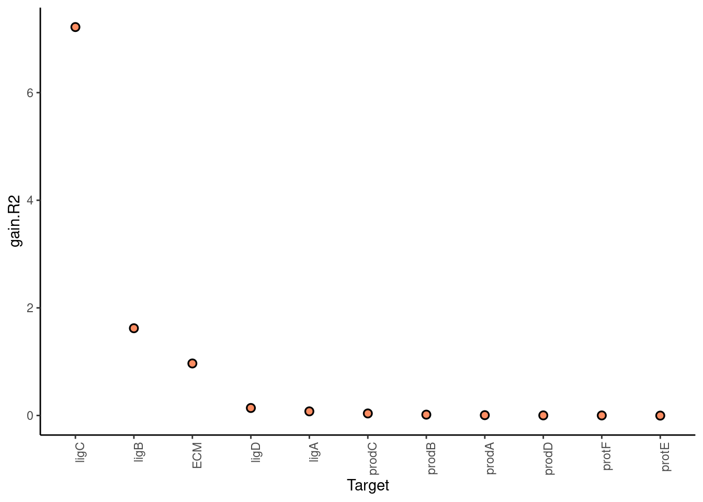
| Version | Author | Date |
|---|---|---|
| 77e38fe | schae211 | 2021-12-02 |
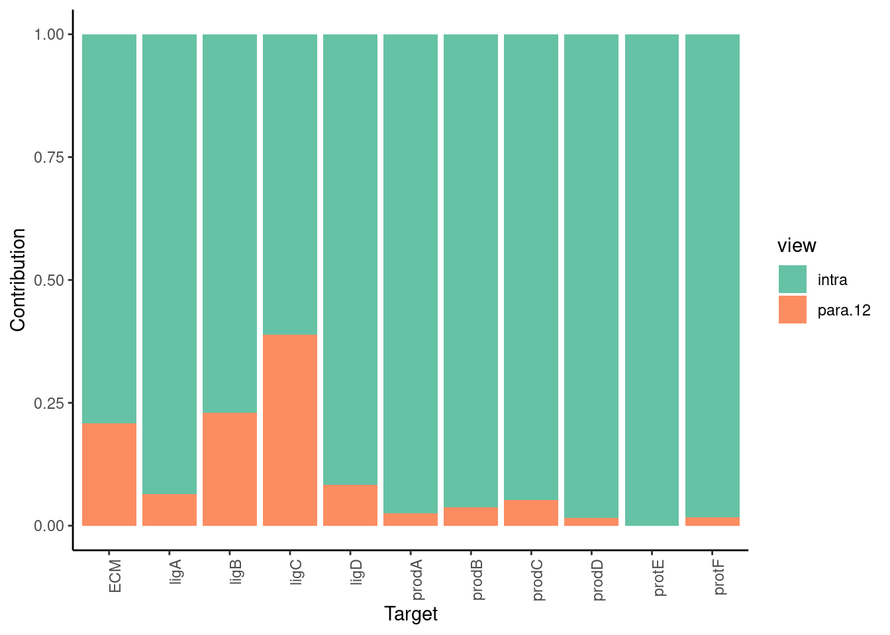
| Version | Author | Date |
|---|---|---|
| 77e38fe | schae211 | 2021-12-02 |
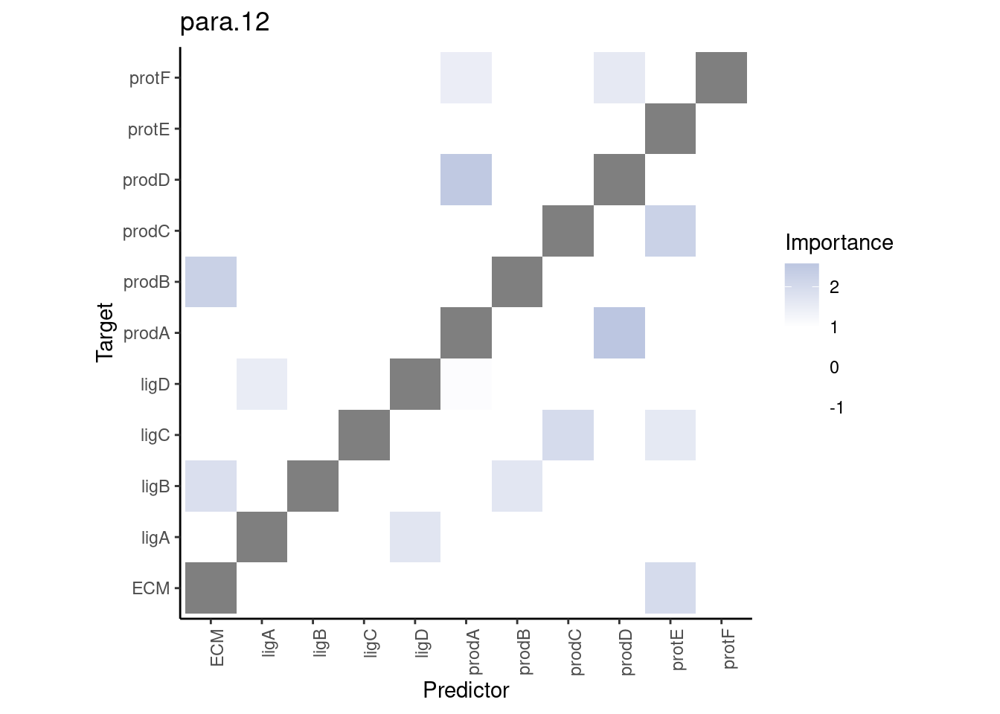
| Version | Author | Date |
|---|---|---|
| 77e38fe | schae211 | 2021-12-02 |
Bagged MARS
misty.views %>% run_misty(method = "bag", learner = "earth",
n.learners = 50, degree = 2) %>%
collect_results() %>%
plot_improvement_stats("gain.R2") %>%
plot_view_contributions() %>%
plot_interaction_heatmap("para.12")
Training models
Collecting improvements
Collecting contributions
Collecting importances
Aggregating
Warning: Removed 11 rows containing missing values (geom_segment).
| Version | Author | Date |
|---|---|---|
| 77e38fe | schae211 | 2021-12-02 |
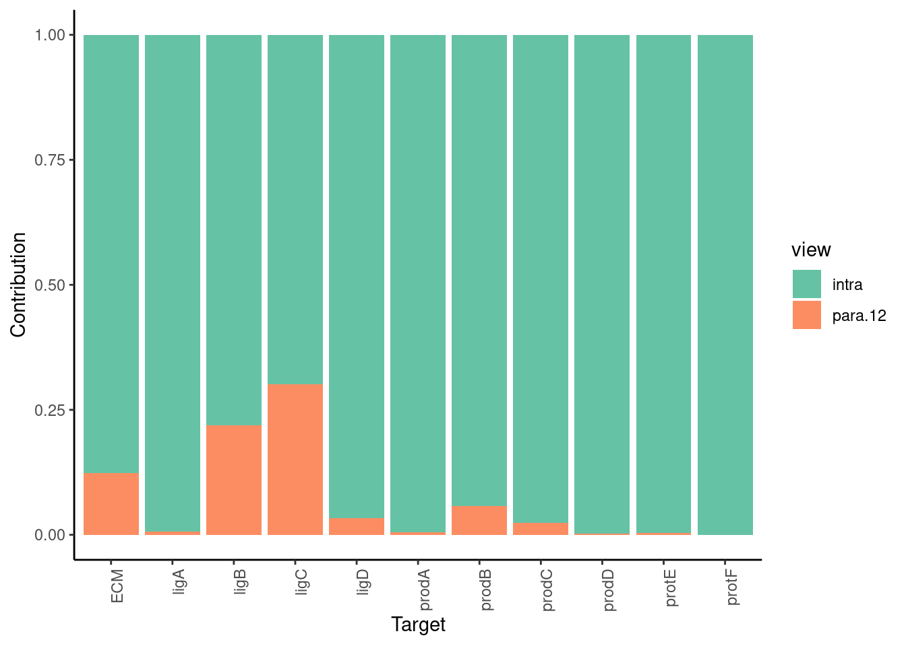
| Version | Author | Date |
|---|---|---|
| 77e38fe | schae211 | 2021-12-02 |
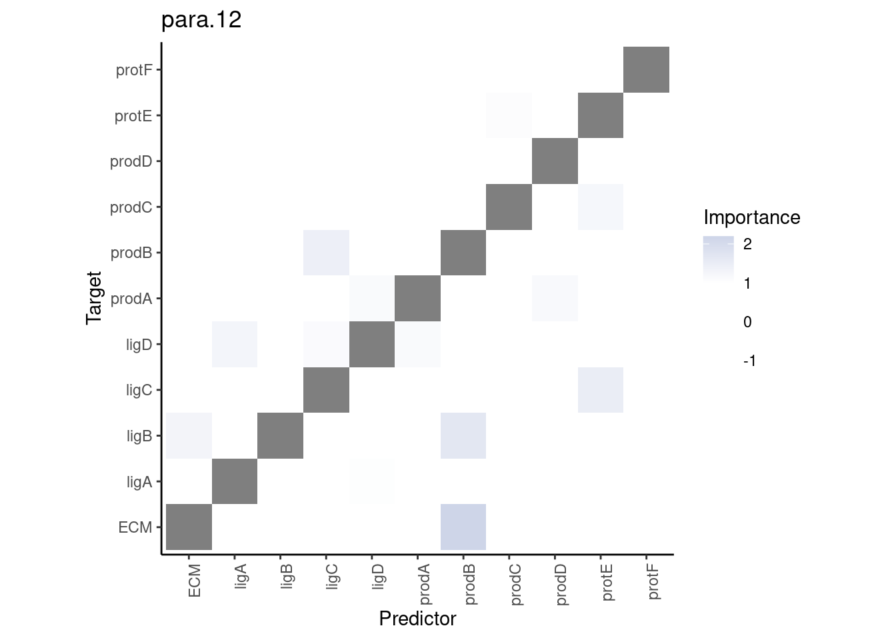
| Version | Author | Date |
|---|---|---|
| 77e38fe | schae211 | 2021-12-02 |
CV MARS
misty.views %>% run_misty(method = "cv", learner = "earth",
cv.folds = 10, degree = 2) %>%
collect_results() %>%
plot_improvement_stats("gain.R2") %>%
plot_view_contributions() %>%
plot_interaction_heatmap("para.12")
Training models
Collecting improvements
Collecting contributions
Collecting importances
Aggregating
Warning: Removed 11 rows containing missing values (geom_segment).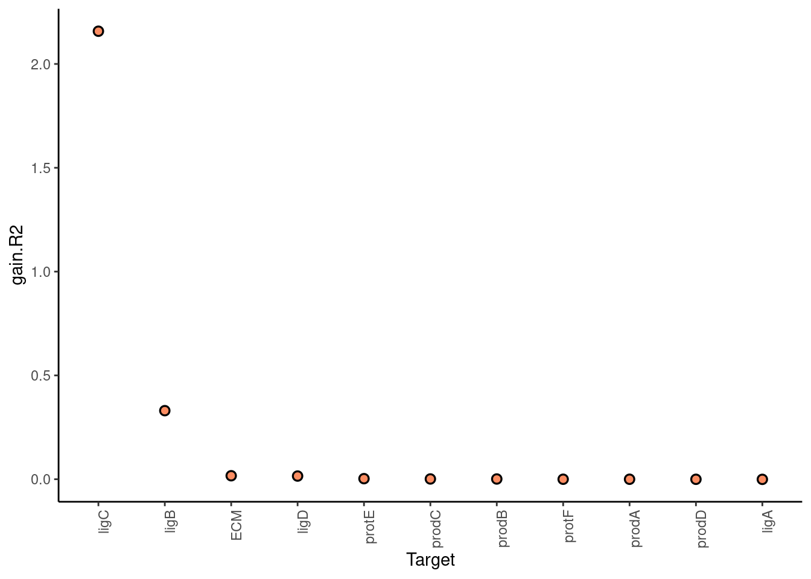
| Version | Author | Date |
|---|---|---|
| 77e38fe | schae211 | 2021-12-02 |
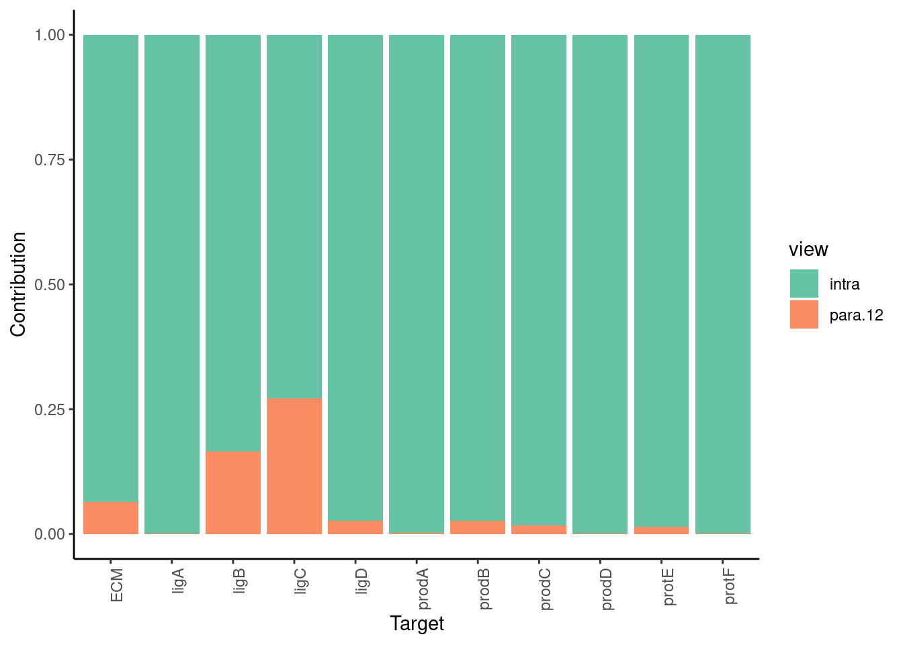
| Version | Author | Date |
|---|---|---|
| 77e38fe | schae211 | 2021-12-02 |
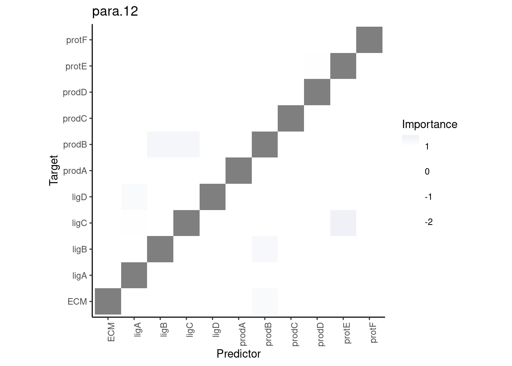
| Version | Author | Date |
|---|---|---|
| 77e38fe | schae211 | 2021-12-02 |
CV SVM
misty.views %>% run_misty(method = "cv", learner = "svmLinear",
cv.folds = 5) %>%
collect_results() %>%
plot_improvement_stats("gain.R2") %>%
plot_view_contributions() %>%
plot_interaction_heatmap("para.12")
Training models
Collecting improvements
Collecting contributions
Collecting importances
Aggregating
Warning: Removed 11 rows containing missing values (geom_segment).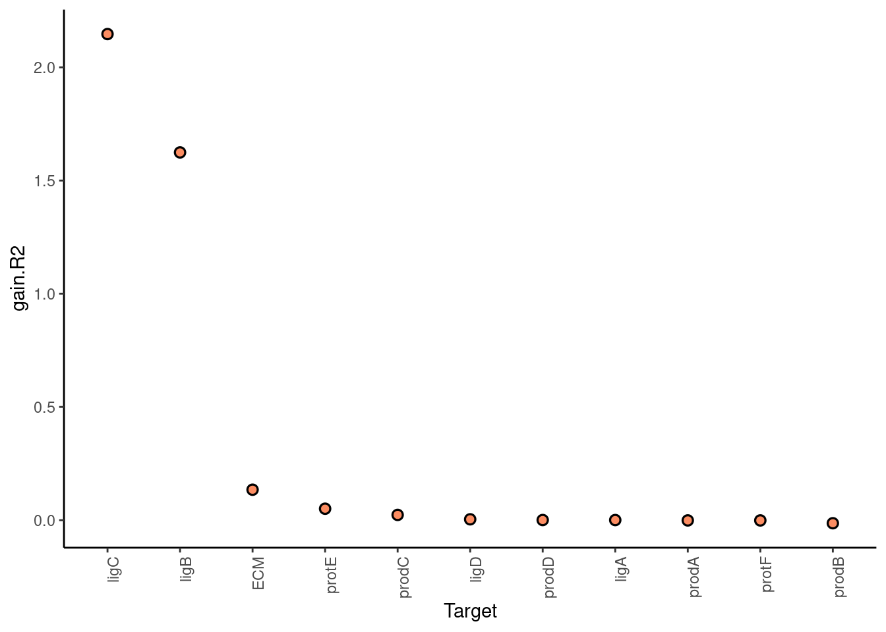
| Version | Author | Date |
|---|---|---|
| 77e38fe | schae211 | 2021-12-02 |
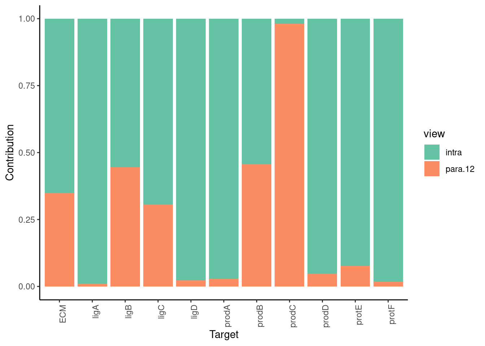
| Version | Author | Date |
|---|---|---|
| 77e38fe | schae211 | 2021-12-02 |
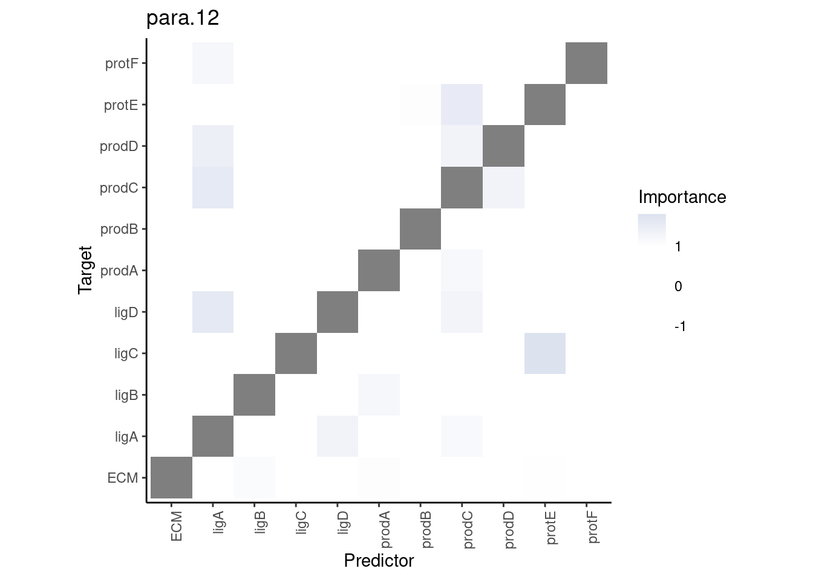
| Version | Author | Date |
|---|---|---|
| 77e38fe | schae211 | 2021-12-02 |
sessionInfo()
R version 4.1.2 (2021-11-01)
Platform: x86_64-pc-linux-gnu (64-bit)
Running under: Ubuntu 20.04.3 LTS
Matrix products: default
BLAS: /usr/lib/x86_64-linux-gnu/blas/libblas.so.3.9.0
LAPACK: /usr/lib/x86_64-linux-gnu/lapack/liblapack.so.3.9.0
locale:
[1] LC_CTYPE=en_US.UTF-8 LC_NUMERIC=C
[3] LC_TIME=en_US.UTF-8 LC_COLLATE=en_US.UTF-8
[5] LC_MONETARY=en_US.UTF-8 LC_MESSAGES=en_US.UTF-8
[7] LC_PAPER=en_US.UTF-8 LC_NAME=C
[9] LC_ADDRESS=C LC_TELEPHONE=C
[11] LC_MEASUREMENT=en_US.UTF-8 LC_IDENTIFICATION=C
attached base packages:
[1] stats graphics grDevices utils datasets methods base
other attached packages:
[1] forcats_0.5.1 stringr_1.4.0 dplyr_1.0.7 purrr_0.3.4
[5] readr_2.0.2 tidyr_1.1.4 tibble_3.1.5 ggplot2_3.3.5
[9] tidyverse_1.3.1 future_1.22.1 mistyR_1.3.1 workflowr_1.6.2
loaded via a namespace (and not attached):
[1] fs_1.5.0 lubridate_1.8.0 filelock_1.0.2 RColorBrewer_1.1-2
[5] httr_1.4.2 rprojroot_2.0.2 tools_4.1.2 backports_1.3.0
[9] bslib_0.3.1 utf8_1.2.2 R6_2.5.1 DBI_1.1.1
[13] colorspace_2.0-2 withr_2.4.2 tidyselect_1.1.1 compiler_4.1.2
[17] git2r_0.28.0 cli_3.0.1 rvest_1.0.1 xml2_1.3.2
[21] labeling_0.4.2 sass_0.4.0 scales_1.1.1 distances_0.1.8
[25] digest_0.6.28 rmarkdown_2.11 R.utils_2.11.0 pkgconfig_2.0.3
[29] htmltools_0.5.2 parallelly_1.28.1 dbplyr_2.1.1 fastmap_1.1.0
[33] highr_0.9 rlang_0.4.12 readxl_1.3.1 rstudioapi_0.13
[37] jquerylib_0.1.4 generics_0.1.0 farver_2.1.0 jsonlite_1.7.2
[41] R.oo_1.24.0 magrittr_2.0.1 rlist_0.4.6.2 Rcpp_1.0.7
[45] munsell_0.5.0 fansi_0.5.0 lifecycle_1.0.1 R.methodsS3_1.8.1
[49] furrr_0.2.3 stringi_1.7.5 whisker_0.4 yaml_2.2.1
[53] grid_4.1.2 parallel_4.1.2 listenv_0.8.0 promises_1.2.0.1
[57] crayon_1.4.1 haven_2.4.3 hms_1.1.1 knitr_1.36
[61] pillar_1.6.3 codetools_0.2-18 reprex_2.0.1 glue_1.4.2
[65] evaluate_0.14 data.table_1.14.2 modelr_0.1.8 vctrs_0.3.8
[69] tzdb_0.1.2 httpuv_1.6.3 cellranger_1.1.0 gtable_0.3.0
[73] assertthat_0.2.1 xfun_0.26 broom_0.7.9 later_1.3.0
[77] globals_0.14.0 ellipsis_0.3.2